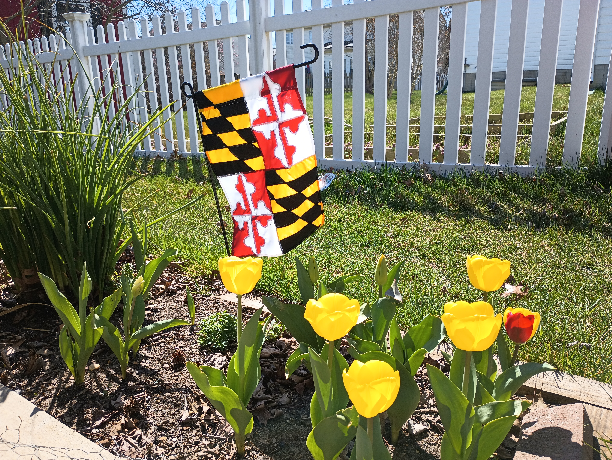
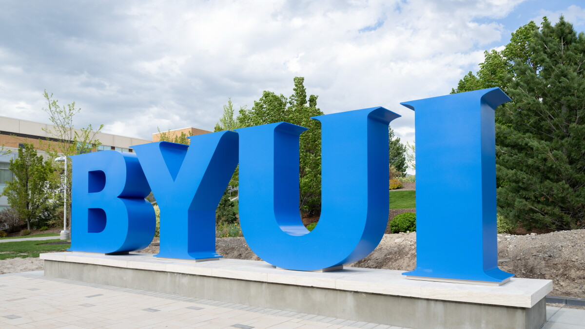
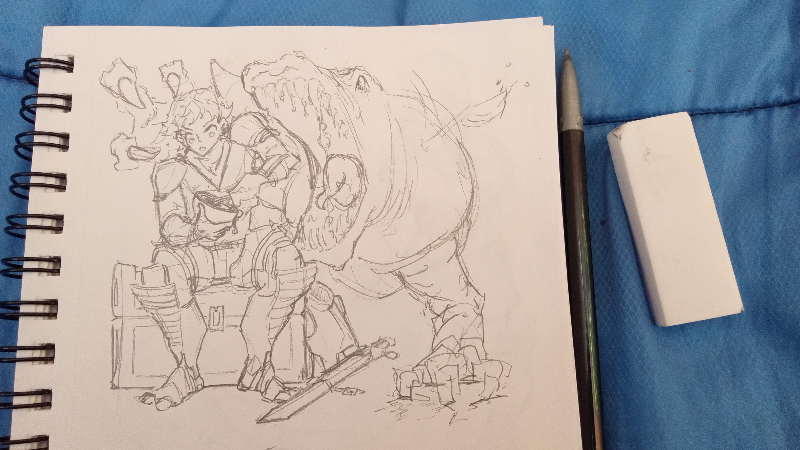
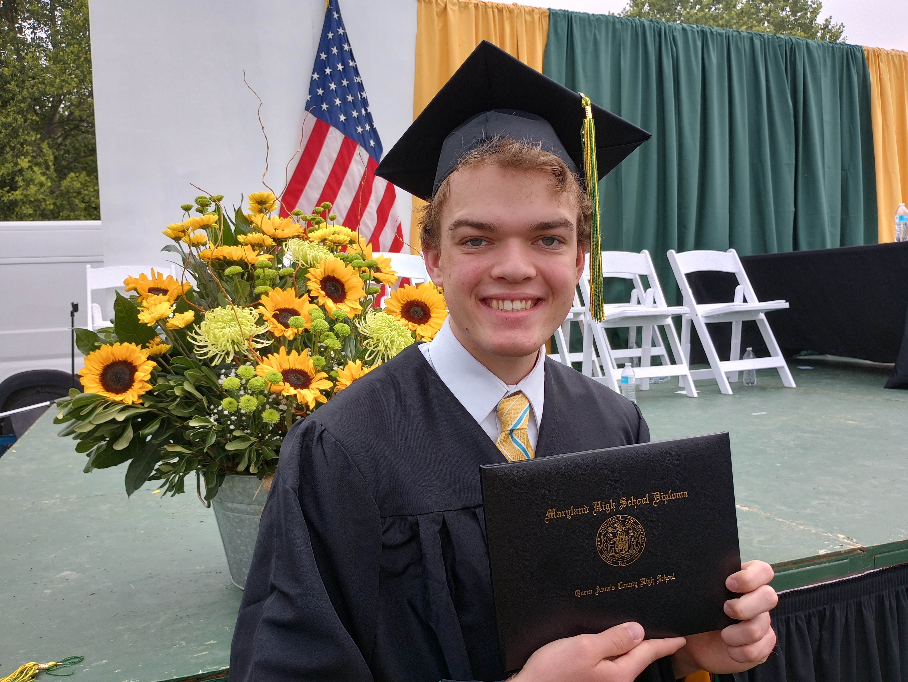

Hi! I'm (Nathaniel) Benson Weibell!
How are you doing?
Thanks for taking the time to look at my porfolio!
About Me
Who I Am
I am currently a Computer Science major attending Brigham Young University Idaho. I was born in Alabama, but was raised on the Eastern Shore of Maryland. In my free time I enjoy programming, reading Japanese, making video games and drawing.



Education

I graduated Queen Anne’s County Highschool in 2023. I am currently enrolled at Brigham Young University as a Computer Science major. I am self-taught in Japanese and art.